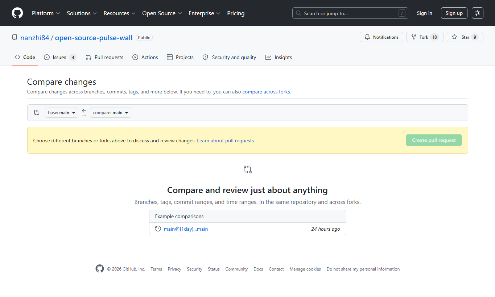
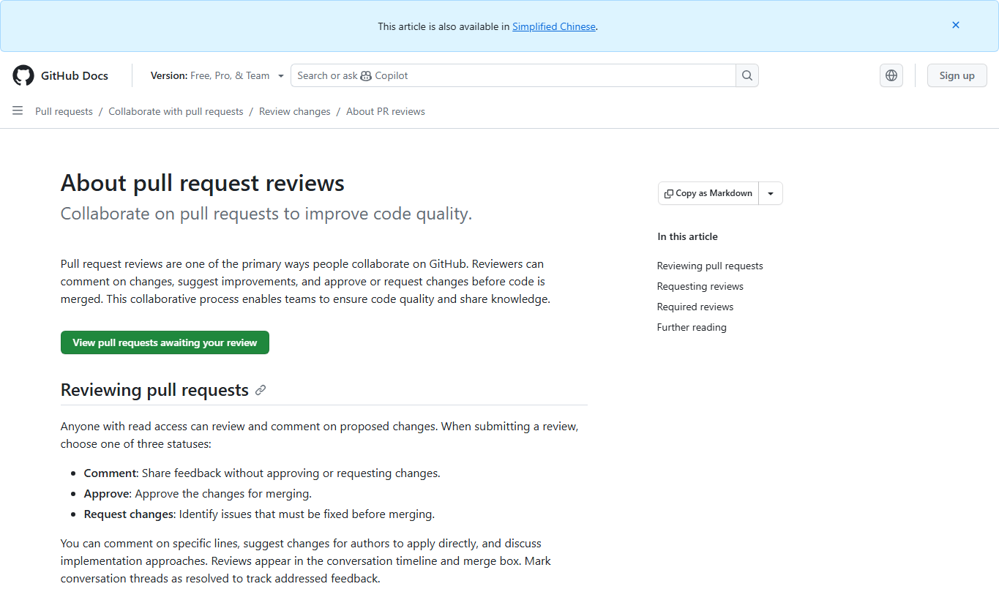

视频占位
建议视频：演示一个失败检查和一条 review 评论，展示如何在原 Pull Request 上继续提交，而不是重新开一个 PR。
5. PR Review 与修错
Pull Request 发出后，协作才真正开始。自动检查、老师 review、同学评论和追加提交都属于正常流程。学生要学会读反馈，而不是一看到红叉就关闭 PR。
创建 PR 时先检查方向
PR 页面最重要的是 base 和 compare。base 应该是老师仓库的 `main`，compare 应该是你自己 Fork 里的任务分支。如果这两个方向选反，页面会显示一堆不相关修改，甚至像是要把老师仓库合并到自己的 Fork。
- base repository：`nanzhi84/open-source-pulse-wall`。
- base branch：`main`。
- head repository：你的 GitHub 用户名下的 Fork。
- compare branch：本次任务分支，例如 `add-your-profile`。


看到检查失败怎么办
- 不要关闭 PR，也不要重新 fork。
- 点进失败的 check，找到具体命令和报错。
- 先定位文件名。如果报错提到 `data/profiles/xxx.json`，就只检查这个文件。
- 再定位字段名。如果报错提到 `github`、`stack`、`style`，就去 Profile 字段实验章节查规则。
- 在同一个分支修正文件，重新 commit 和 push。
- 回到 PR 页面，等待检查重新运行。
收到 review 评论怎么办
review 评论通常不是否定，而是在指出需要修改的地方。学生应该先判断评论属于哪一种：格式问题、字段规则问题、文件位置问题、PR 方向问题，还是表达建议。能改代码的，就在原分支继续改；需要解释的，就在评论下回复说明。
- 如果评论说文件名不对，重命名文件后再提交。
- 如果评论说 JSON 格式不对，先在 VS Code 修红线，再运行 `npm run validate`。
- 如果评论说 PR 包含无关文件，先确认自己是否误提交了其他文件。
- 如果评论只是建议改文案，可以直接改 `motto` 或 `role` 后再次提交。
为什么不用重新开 PR
Pull Request 跟一个分支绑定。只要你继续往同一个分支 push 新 commit，PR 页面会自动更新。重新开 PR 反而会让讨论断掉，老师也看不到你是如何根据反馈修正的。
git add data/profiles/your-github-id.json
git commit -m "fix: update profile format"
git push origin add-your-profile同步 Fork 的时机
如果老师仓库在你 Fork 之后已经更新，GitHub 页面可能提示你的分支落后。第一次添加 Profile 时通常不需要急着处理复杂冲突；如果准备开始新的任务，先同步 Fork，再从最新的 `main` 开新分支，会减少后续 PR 冲突。